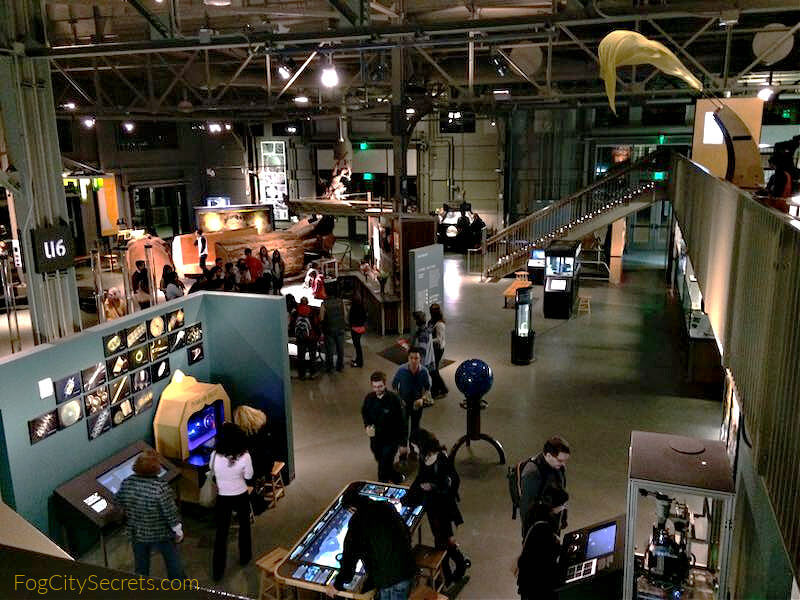
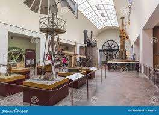
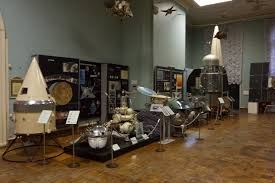
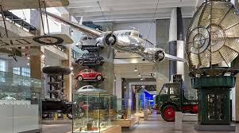

Давление и гвозди
Двигайте мышь: больше гвоздей — меньше давление, садиться не больно.
ПодробнееМы превращаем абстрактные формулы в наглядные модели, симуляции и практические занятия, чтобы ученики реально понимали, а не заучивали.
Наши модели устанавливаются в школьных коридорах и открытых учебных зонах, чтобы ученики могли подходить к ним в любой момент, а учителя — быстро связывать опыт с темой урока.
Большинство школьников не понимают физику не потому, что «слабые», а потому что её часто объясняют слишком абстрактно. Мы закрываем этот разрыв
Формулы без интуиции и связи с реальными явлениями
Недостаточно визуальных моделей, которые можно увидеть и запустить самостоятельно
Ученики быстро теряют интерес, если не видят связь формулы с реальным явлением
Мы создаём модели, которые учителю легко внедрить, а ученику легко понять
Движение, волны, оптика — то, что сложно представить, становится видимым
Коротко и по делу: суть явления, формула и связь с реальной жизнью
Модели полностью безопасны для самостоятельного использования учениками
Наглядные модели, установки
Примеры моделей и проектов. Полный список — на странице проектов.
 01
01Сесть на сотни гвоздей — и не больно: вес распределяется на множество точек.
Подробнее 02
02Раскрути колесо — и грузы на рычагах сами отъезжают от центра наружу.
Подробнее 03
03Сядь и потяни канат — поднимешь сам себя. Блоки дают выигрыш в силе.
Подробнее 04
04Раскрученное колесо упрямо держит ось — гироскопический эффект.
Подробнее 05
05Маятники разной массы, но одной длины качаются в такт.
Подробнее 06
06Тяни два каната — и ведёшь сердце по полю, складывая две силы в одну.
Подробнее 07
07Чуть сдвинул точку старта — и шарик идёт совсем другим путём. Эффект бабочки.
Подробнее 08
08Груз в воде «легчает» — весы показывают выталкивающую силу.
Подробнее 09
09Между магнитами вырастает цепочка из гаек — «невидимый мост».
Подробнее 10
10Наэлектризуй перчатку — и лёгкие шарики прыгают, притягиваются и разлетаются.
ПодробнееКороткие анимации показывают суть эксперимента до того, как ученик подойдёт к установке.
Двигайте мышь: больше гвоздей — меньше давление, садиться не больно.
ПодробнееДвигайте мышь: чем выше скорость, тем дальше грузы отходят от центра.
ПодробнееДвигайте мышь: больше блоков — меньше нужная сила.
ПодробнееНажмите, чтобы раскрутить колесо — оно начинает держать ось.
ПодробнееМеняйте длину мышью: грузы разной массы качаются в один период.
ПодробнееТяните две стрелки — фиолетовая показывает равнодействующую.
ПодробнееНажимайте сверху и роняйте шарики — путь каждый раз другой.
ПодробнееОпускайте груз в воду — его кажущийся вес уменьшается.
ПодробнееДвигайте магнит — гайки тянутся к нему и строят мост.
ПодробнееДвигайте заряд, клик меняет знак — притяжение или отталкивание.
ПодробнееУченик видит явление вживую, а не только формулу на доске.
Модель можно потрогать, запустить и повторить — опыт запоминается надолго.
Понимание причин и следствий заменяет механическое заучивание формул.
Каждая модель привязана к реальным явлениям и понятным примерам.
Вдохновение из лучших мировых музеев науки — в каждую школу.
В лучших научных музеях мира физику не зубрят — её трогают руками. Посетители крутят, толкают, запускают экспонаты и сами видят, как работают законы природы.
Мы вдохновились этим подходом и задались вопросом: почему такие установки должны быть только в музеях больших городов? Так появился Visual Physics — мы приносим «музей науки» прямо в школьные коридоры и открытые учебные зоны.
Каждая наша модель — это маленький интерактивный экспонат, с которым ученик взаимодействует на обычном уроке.
Смотреть проекты



Ваш вклад помогает Visual Physics масштабироваться и заходить в новые школы.
Поддержать Visual Physics
Пожертвования идут на материалы и сборку моделей. Любой вклад помогает сделать физику понятнее для большего числа учеников
Поддержать проектХотите Visual Physics в вашей школе?
Оставьте заявку — мы свяжемся и предложим модели и план запуска. Работаем с государственными и частными школами
Оставить заявкуОставьте заявку — подберём модели под вашу программу и предложим формат установки в коридоре или открытой учебной зоне. Это бесплатно и ни к чему не обязывает.